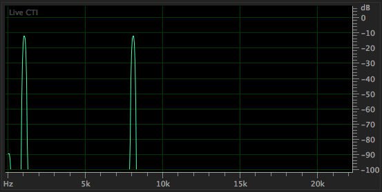
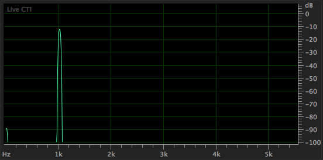

Digital Audio
The mystery behind sampling and reconstruction
Spring 2019 - Audio Tech Talk Series
January 22, 2019
What is audio?

Analog Audio

Digital Audio


Sampling Theorem
Sampling Theorem
A continuous time signal (analog) can be completely represented by its samples and can be recovered back
when the sampling frequency \( f_s \) is greater than or equal to the twice the highest frequency
component \( f_m \) of the signal.
i.e.
\( f_s\geq2*f_m \)
Examples
- Human speech (100 Hz - 4,000 Hz)
- Music (20 Hz - 20,000 Hz)
- Temperatue sensor (~0 Hz - 0.25 Hz)
Reconstruction
There is only ONE bandlimited signal that fits the sampled points.


Caveats
- Sampled signal MUST be bandlimited -> Aliasing
- Finite bit depth (e.g. 16 bits) -> Quantization noise
- Sampled signal MUST be bandlimited -> Aliasing
- Finite bit depth (e.g. 16 bits) -> Quantization noise
Pulse Code Modulation (PCM)
Sampling Rate and Bit Depth
Bit depth = number of discrete levels -> Dynamic range
Sampling rate = number samples per second -> Bandwidth
Sampling Rate
\(f_s = 44.1 \) kHz -> \( f_m = 22.05 \) kHz
\( f_s = 22.05 \) kHz -> \( f_m = 11.025 \) kHz
\( f_s = 11.025 \) kHz -> \( f_m = 5.5125 \) kHz
Aliasing

Anti-Aliasing Filters


1 kHz + 8 kHz @ 16bit 44.1 kHz

1 kHz + 8 kHz @ 16bit 11.025 kHz

1 kHz + 8 kHz @ 16bit 11.025 kHz (No Anti-Aliasing filter)
\(f_s = 22.05 \) kHz -> \( f_m = 11.025 \) kHz
\( f_s = 22.05 \) kHz -> \( f_m = 11.025 \) kHz (no anti-aliasing filter)
Bit Depth
16 bit -> 96 dB
8 bit -> 48 dB
Difference between 16 bit and 8 bit (with dither)
Difference between 16 bit and 8 bit (no dither)
Quantization Noise

Dither
1 kHz sine wave @ 16 bit 44.1 kHz
1 kHz sine wave @ 8 bit 44.1 kHz (with dither)
1 kHz sine wave @ 8 bit 44.1 kHz (no dither)
Analog comparison
| Format | Dynamic range | Effective Bit Depth |
|---|---|---|
| Cassette | 40 dB | 6 bits |
| Vinyl | 60 dB | 10 bits |
| Reel-to-Reel | 80 dB | 13 bits |
| CD | 96 dB | 16 bits |
| HD Audio | 144 dB | 24 bits |
* These are estimates -> analog hardware performance varies
Further Reading
- Sigma-Delta converter (PDM)
- Error-correction codes (EFM, Reed-Solomon, etc.)
- Perceptual Audio Coding (MP3, AAC, etc.)
- Relevant ECE Courses
- ECE 3300: Signals & Systems
- ECE 4270: Communcation Systems
- ECE 3170: Random Signal Analysis
- ECE 4670: Digital Signal Processing
- ECE 3300: Signals & Systems
- ECE 4270: Communcation Systems
- ECE 3170: Random Signal Analysis
- ECE 4670: Digital Signal Processing